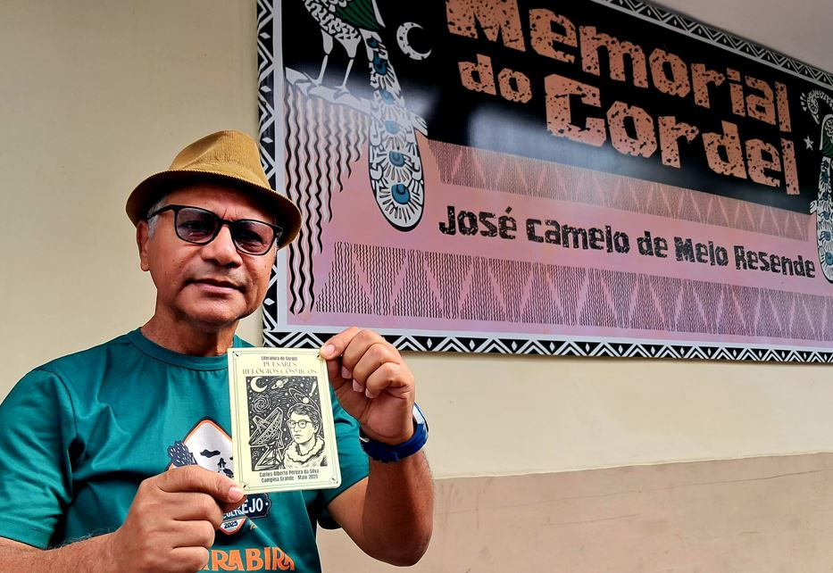
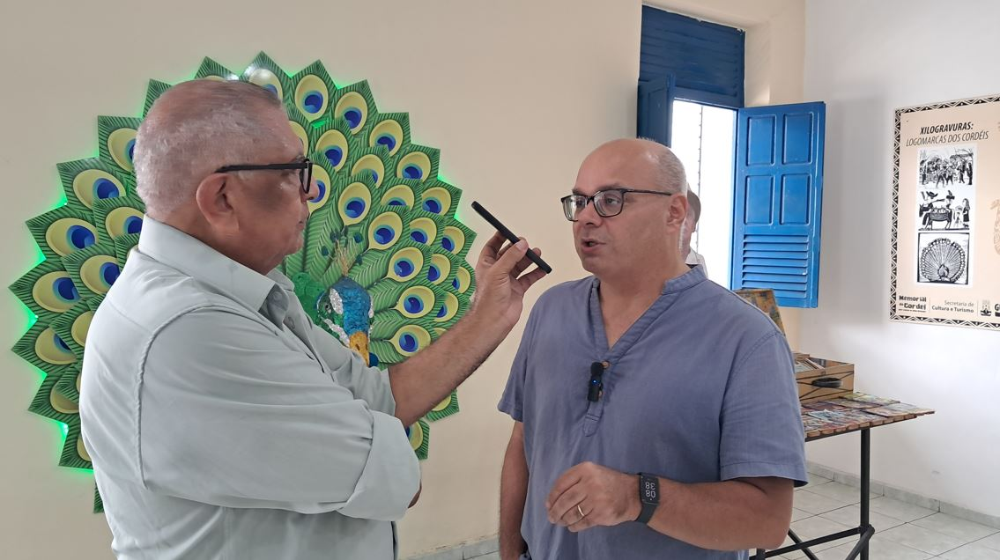
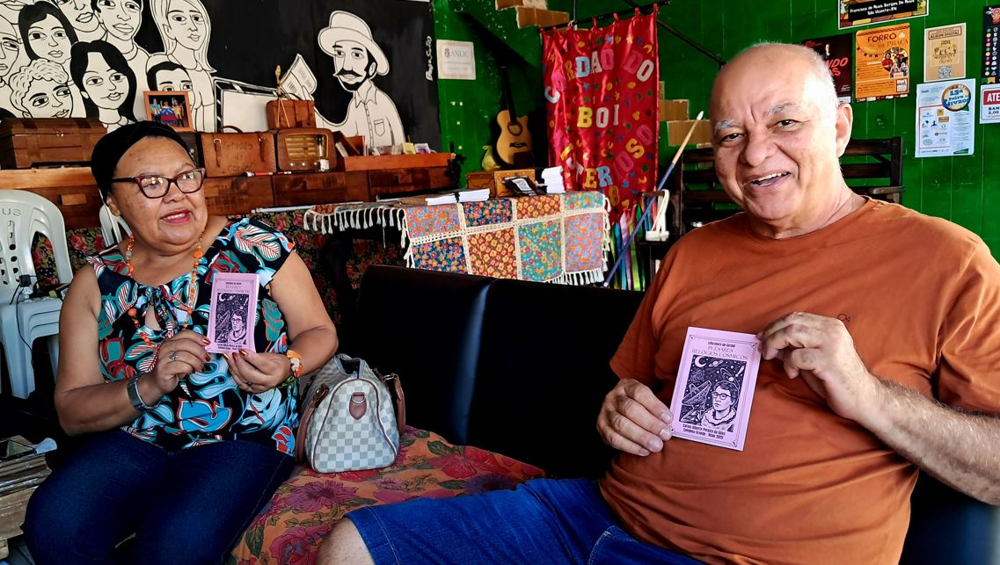

O Instituto Vinciano realizou, no início de setembro, uma nova ação da Orbis, programa mantido pela instituição para levar seus projetos e iniciativas para além de suas fronteiras de atuação, alcançando outros estados, regiões e países. Desta vez, o percurso teve como eixo Pulsares: Relógios Cósmicos, primeiro cordel do projeto Radioastronomia em Cordel, com passagens por Guarabira, na Paraíba, e Natal, no Rio Grande do Norte.
Primeira parada: Guarabira
A primeira etapa aconteceu em 1º de setembro, no Memorial do Cordel José Camelo de Melo Resende, em Guarabira. O espaço, que completou dez anos em 2025, é dedicado à valorização da memória do cordel e de seus mestres e mantém atividades relacionadas à literatura de cordel e à cultura popular.
A visita foi acompanhada pelo diretor do Memorial, o poeta Chico Mulungu, membro da Academia Guarabirense de Letras e Artes (AGLACMA) — Casa Marisa Alverga — e da Academia de Cordel do Vale do Paraíba (ACVPB). Exemplares de Pulsares: Relógios Cósmicos foram deixados no Memorial, ampliando a circulação do primeiro título do projeto Radioastronomia em Cordel.

O encontro também resultou em intercâmbio entre os acervos. Chico Mulungu entregou ao Instituto Vinciano um exemplar de seu cordel O Poeta Que Cantou Mas Não Teve Sorte, José Camelo de Melo Rezende, lançado em 2026. A publicação foi incorporada à Cordelteca Candeeiro de Versos, mantida pelo Instituto Vinciano, onde recebeu o número de tombo 47.
Durante a passagem por Guarabira, Carlos Alberto, coordenador do projeto Radioastronomia em Cordel, também foi entrevistado pelo radialista Nilton Batista, da Rádio Cultura de Guarabira. Na conversa, apresentou o projeto e falou sobre sua proposta de aproximar a radioastronomia da literatura de cordel, além de abordar outros assuntos.

De Guarabira a Natal
A segunda etapa aconteceu em 3 de setembro, com uma visita à Estação do Cordel, em Natal. Inaugurado em 14 de março de 2017, Dia Nacional da Poesia, o Ponto de Memória foi criado coletivamente por poetas, educadores e artistas populares do Nordeste com o objetivo de promover e proteger a literatura de cordel e outras manifestações culturais nordestinas. Ao longo de sua atuação, desenvolve atividades como saraus, oficinas, rodas de conversa e ações de circulação da produção de cordel.
Na Estação do Cordel, a visita foi acompanhada pelo atual presidente, Nando Poeta, e por uma de suas ex-presidentes, a poeta cordelista Tonha Mota. O Instituto Vinciano deixou exemplares de Pulsares: Relógios Cósmicos no espaço e conversou sobre possibilidades em torno de uma participação no 10º Círculo Natalense do Cordel, previsto para novembro.

O intercâmbio também trouxe novas publicações para o acervo do Instituto Vinciano. Tonha Mota entregou o cordel O Preconceito Mata, de 2021, publicado em São Paulo (SP), enquanto Nando Poeta entregou As Belezas de Natal no Cenário Potiguar, de 2019, escrito em parceria com Marciano Medeiros.
Com as duas visitas, a ação da Orbis articulou circulação e intercâmbio: exemplares de Pulsares: Relógios Cósmicos passaram por dois espaços dedicados à literatura de cordel, em dois estados, enquanto novas publicações fizeram o percurso inverso e chegaram ao acervo do Instituto Vinciano.
Radioastronomia em Cordel
Pulsares: Relógios Cósmicos é o primeiro título do Radioastronomia em Cordel, projeto do Instituto Vinciano que utiliza a literatura de cordel como linguagem para abordar temas relacionados à radioastronomia e à divulgação científica.
A Cordelteca Candeeiro de Versos compõe o acervo de cultura popular mantido pelo Instituto Vinciano e reúne folhetos de cordel incorporados e catalogados pela instituição, entre eles as publicações recebidas em ações de intercâmbio como as realizadas durante a Orbis.